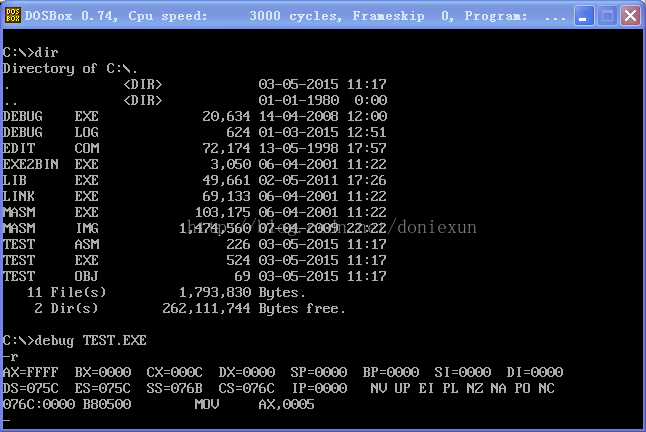

目录视图
目录视图 摘要视图
摘要视图 订阅
订阅版权声明：本文为博主原创文章，未经博主允许不得转载。
------------------------------------ 版权信息 ------------------------------------
此文链接: http://blog.csdn.NET/doniexun/article/details/45438457
此文作者: Windness
版权说明: 此文为作者经过检索网上资源及根据个人开发经验整理所得,所有参考文献均已在文末标注,转载请务必保留本文链接及作者信息!
------------------------------------ 版权信息 ------------------------------------
学一门语言，最好的方法便是在实践中学习。对于不少初学者来说，首先要面临的是如何搭建开发平台/环境的问题。由于汇编语言的特殊性，不少初学者会担心自己直接对寄存器进行操作会不会导致系统崩溃或者系统硬件损坏，再加上现如今高级程序设计语言大行其道，真正需要写汇编语言的情境已经不那么多了，所以不少初学汇编语言的同学都还停留在纸上谈兵的状态。
本人初次学习汇编语言已经是五年前，但一直都未亲自实践过，最近工作上需要用到反汇编二进制可执行文件，因此计划重新拾起曾经学过的汇编语言，以便能够顺利完成手头上的项目。以下是搭建基于DOSBOX+MASM32的汇编语言开发环境记录。
1 工具准备
1）下载DOSBOX
工具介绍：DOSBox 是一个 DOS 模拟程序，由于它采用的是 SDL 库，所以可以很方便的移植到其他的平台。目前，DOSBox 已经支持在 Windows、Linux、Mac OS X、BeOS 、palmOS、Android 、webOS、os/2等系统中运行。不少DOS下的游戏都可以直接在该平台上运行。
工具官网：http://www.dosbox.com/
项目主页：http://sourceforge.Net/projects/dosbox/
下载链接：http://sourceforge.net/projects/dosbox/files/dosbox/0.74/DOSBox0.74-win32-installer.exe/download（32位）
说明：由于项目已经停更，目前官网上指出，DOSBOX可以运行于32位和64位的Windows Vista和Windows 7之上，根据本人亲测，亦可在32位和64位的Windows 10上运行DOSBOX，因此有需要的童鞋可以试试。
2）下载MASM32
工具介绍：MASM32是国外的MASM爱好者Steve Hutchesson自行整理和编写的一个软件包，目前最高版本为11r版。MASM32并非指Microsoft的MASM宏汇编器，而是包含了不同版本工具组建的汇编开发工具包。它的汇编编译器是MASM6.0以上版本中的Ml.exe，资源编译器是Microsoft Visual Studio中的Rc.exe，32位链接器是Microsoft Visual Studio中的Link.exe，同时包含有其他的一些如Lib.exe和DumpPe.exe等工具。
工具官网：http://www.masm32.com/
下载链接：http://www.masm32.com/downloads
注意：也可以直接下载由参考资料3作者提供的masm工具压缩包，里面包含必要的汇编、链接、调试工具，百度网盘下载链接：https://pan.baidu.com/s/1skL2bVJ，密码：7uv1。
2 安装工具
1）安装DOSBOX
安装下载到的DOSBox0.74-win32-installer.exe，直接一路Next完成安装。
2）配置DOSBOX
创建一个用于保存汇编工具（如MASM、Link、DEBUG等工具）和汇编文件（*.asm）的目录，如：D:\DEBUG。
打开DOSBOX的安装根目录（默认安装路径：C:\Program Files\DOSBox-0.74；若是64位的系统，则默认安装路径：C:\Program Files (x86)\DOSBox-0.74），双击文件DOSBox 0.74 Options.bat，运行该批处理文件后系统会用文本文档Notepad打开配置文件dosbox-0.74.conf。
将光标定位到dosbox-0.74.conf文件的[autoexec]节点（一般在该文件末尾），在文件中添加以下内容：
- MOUNT C D:\DEBUG # 将目录D:\DEBUG挂载为DOSBOX下的C:
- set PATH=$PATH$;D:\DEBUG # 将D:\DEBUG写入环境变量PATH中

3）安装MASM32
可解压安装下载到的masm32v11r.zip，按默认配置安装即可。
安装结束后，可直接利用masm32v11r中的gedit.exe程序编写、编译和链接asm汇编程序。
注意：MASM32的替代方案：
可直接从其他电脑或从上述网盘地址提供的压缩包将汇编工具DEBUG.EXE、EDIT.EXE、LINK.EXE、MASM.EXE等工具复制到D:\DEBUG文件夹下（复制时注意不能将32位系统中找到的上述工具复制到64位系统中使用）。
3 样例程序
注意：当进入DOSBOX编辑界面，随意可以按Windows键退出DOSBOX编辑界面；以下命令的拼写忽略大小写。
1）运行DOSBOX，在命令符C:\>下输入命令：EDIT 文件名.asm，启动EDIT.EXE进入代码编辑状态，并输入如下样例程序：
- code segment
- assume cs:code
- start:
- mov ax,5h
- mov bx,6h
- add ax,bx
- mov ah,4ch ; 调用DOS的4C号功能
- int 21h ; 退出DEBUG状态，返回DOS
- code ends
- end start

2）保存文件后返回DOSBOX的命令行，输入命令：MASM 文件名.asm，生成目标文件文件名.OBJ（生成过程中可以修改目标文件名，直接回车可保持默认目标文件名）。
注意：此时可能生成三个文件：*.obj、*.lst和*.crf文件（Windows10 x64系统可能只会生成*.obj文件）。其中，列表文件*.lst和交叉引用文件非必选，前者是汇编语言汇编的机器语言与汇编语言对照表，可用于调试；后者给出了用户定义的所有符号和对每个符号定义、引用的行号。
3）输入命令：LINK 文件名.OBJ，链接生成可执行文件文件名.EXE。
注意：由于在上述代码中未定义堆栈段，故在链接时会提示：LINK : warning L4021: no stack segment，因不会影响执行文件的生成，故暂时忽略。
另外，此时可能生成两个文件：*.exe和*.map文件（Windows10 x64系统可能只会生成*.exe文件）。其中，地址映射文件*.map给出内存地址分配的有关信息。
4）输入命令：DEBUG 文件名.EXE，在DEBUG的命令提示符“-”出现后开始调试，以下是部分调试命令及截图：
输入命令：R，查看程序运行前的寄存器组初始值；

输入命令：U，查看程序反汇编代码。从反汇编代码中可看出，变量会被汇编为直接寻址方式，使用变量在数据段内的有效地址表示。
输入命令：T，单步调试；
输入命令：D，观察内存变化（D后不带地址或范围，默认显示上一个D命令之后的80字节内容）；
输入命令：G 地址，程序从当前位置直接运行到指定地址处停下。
输入命令：E 地址修改内存中的内容，如：E DS:0100，输入空格可逐个字节修改，回车停止修改。
4 参考资料
1）MASM百度百科：http://baike.baidu.com/view/1754206.htm
2）DOSBOX百度百科：http://baike.baidu.com/view/716885.htm
3）Win8下用DOSBox编写汇编语言：http://www.tuicool.com/articles/v2A3mm
- 顶
- 16
- 踩
- 1
我的同类文章
- •拆解GCC命令的预处理-编译-汇编-链接4个阶段2014-07-31
- •gdb反汇编详解C函数底层实现笔记（程序堆栈、内存分配）2014-07-30


- 猜你在找


我在DOSBOS中输入EDIT无效，程序显示:illeagal command edit ;另外，我DOSBOS命令提示符是Z：\>-
电脑并无Z盘。。这样是否正常？
同问！！！
MASM32安装时出现 无法定位序数 201 于动态链接库 C:\WINDOWS\AppPatch\AcGenral.DLL 上
请问这是什么原因呢
建议直接利用本文提供的百度网盘的链接下载masm工具包，里面的各个工具无需安装，即可直接使用（32位或64位的Windows Vista/7/8/8.1/10均可直接运行）。